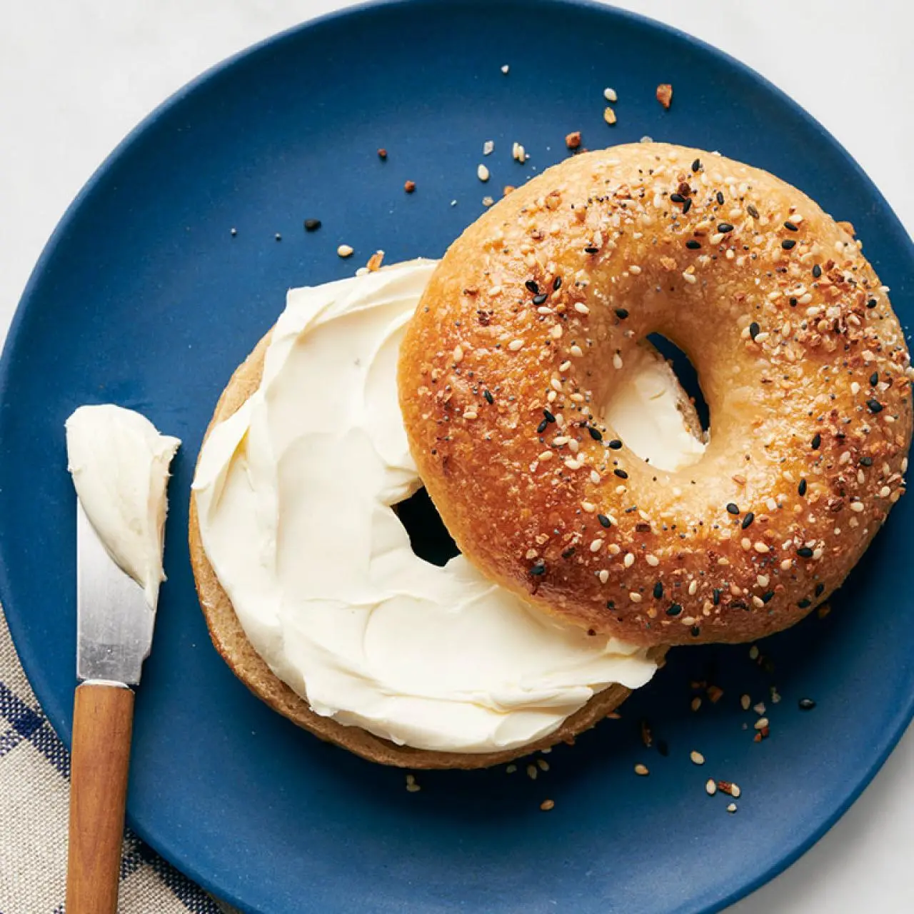

Bagel Recipe

Description
This easy homemade New York-Style Bagel recipe is simply the best!
Basic pantry ingredients transform into deliciously chewy freshly made New York bagels.
Ingredients
- 2 teaspoons active dry yeast
- 4 ½ teaspoons granulated sugar
- 1 ¼ cups warm water
- 3 ½ cups bread flour or high gluten flour
- 1 ½ teaspoons salt
- Optional Toppings: (Refer to Notes)
Steps
- In ½ cup /120ml of the warm water, pour in the sugar and yeast. Do not stir.
Let it sit for five minutes, and then stir the yeast and sugar mixture until it all dissolves in the water.
-
Mix the flour and salt in a large bowl. Make a well in the middle and pour in the yeast and sugar mixture.
-
Pour 1/3 cup / 80ml of warm water into the well.
Mix and stir in the rest of the water (the scant 1/2 cup / 100ml that is remaining), as needed.
Depending on where you live, you may need to add an additional couple tablespoons to about ¼ cup/60ml of water.
You want a moist and firm dough after you have mixed it.
-
On a floured countertop, knead the dough for about 10 minutes until it is smooth and elastic.
Try working in as much flour as possible to form a firm and stiff dough.
-
Lightly brush a large bowl with oil and turn the dough to coat.
Cover the bowl with a damp dish towel. Let rise in a warm place for 1 hour, until the dough has doubled in size.
Punch the dough down, and let it rest for another 10 minutes.
- Carefully divide the dough into 8 pieces (I used a scale to be extra precise, but it’s not necessary).
Shape each piece into a round. Now, take a dough ball, and press it gently against the countertop
(or whatever work surface you’re using) moving your hand and the ball in a circular motion pulling the
dough into itself while reducing the pressure on top of the dough slightly until a perfect dough ball forms
(as pictured).
Repeat with 7 other dough rounds.
-
Coat a finger in flour, and gently press your finger into the center of each dough ball to form a ring.
Stretch the ring to about ⅓ the diameter of the bagel and place on a lightly oiled cookie sheet.
Repeat the same step with the remaining dough.
-
After shaping the bagels and placing them on the cookie sheet, cover with a damp kitchen towel and allow to rest for 10 minutes.
Meanwhile, preheat your oven to 425ºF / 220ºC / Gas Mark 7.
-
Bring a large pot of water to a boil. Reduce the heat. Use a slotted spoon or skimmer to lower the bagels into
the water. Boil as many as you are comfortable with boiling. Once the bagels are in, it shouldn’t take too long
for them to float to the top (a couple seconds). Let them sit there for 1 minute, and then flip them over to boil
for another minute. Extend the boiling times to 2 minutes each,
if you’d prefer a chewier bagel (results will give you a more New York-Style bagel with this option).
-
If you want to add toppings to your bagels, do so as you take them out of the water.
Alternatively, you can use an egg wash to get the toppings to stick before baking the bagels.
You may want to use the “Optional Toppings” listed above to top the bagels. Use just one topping,
or a combination to make your own Everything Bagel Seasoning.
-
Once all the bagels have boiled (and have been topped with your choice of toppings),
transfer them to an oiled or parchment-lined baking sheet.
-
Bake for 20 - 25 minutes, or until golden brown (I usually err on the side of 20 minutes).
-
Cool on a wire rack (Or, if you’re impatient like I am, slice one of these babies open and spread on some of your
favorite cream cheese or softened butter. Take a bite… Oh babyyy!)